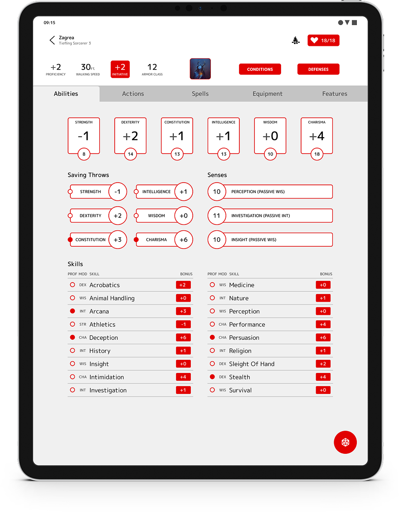

D&D Beyond Redesign
07/2021
Ideation
UX
UI
Every other week I play Dungeons & Dragons with a couple of friends. While a lot of people use pen and paper to play the game, there is an official digital tool: D&D Beyond. In general I would say this is a pretty good. There are, however, a couple of things I would change if given the chance.
The Problem
Playing Dungeons & Dragons requires quite a bit of preparation, and a lot of information. Having all this information readily available is a godsent. DnDBeyond does this quite well, it's just that the structuring of their app leaves something to be desired. There are a lot of pages, which are unneccesarily difficult to navigate. The app can feel quite cluttered at times and the space they have is not well utilised.
The Design Challenge
How can I redesign the DnDBeyond app in a way that stays true to D&D, while optimizing information display and page navigation.
Stats & Skills
Two of the most important aspects of your D&D character sheet are the stat modifiers and skills. These determine how good you are at certain things like climbing rocks or convincing someone that you in fact didn't steal all their gold. These pages have been separated in DnDBeyond, even when there's room to spare.
So I transformed that into a page that is more in line with the regular paper character sheet where you can have all this information in a single glance.
Look and Feel
The D&D character sheet is classically designed in red and white. However the app from DnDBeyond is in a perpetual dark mode (that you can't change out of) with off black and blue coloration. To return to the roots of D&D I went back to the white and red look.
Navigation
Partially due to the page arrangement, the navigation in the app is sub-optimal. The menu is not ideal, and due to weird placements and naming of some subjects navigation can be a chore. By merging some pages I've reduced the amount of pages so navigation can be simplified and improved.
'Proficiencies & Languages', 'Description' and 'Notes' now all fall under ‘Character’, which can be accessed by pressing the character image. The rest of the the rest of the pages have been moved to a tab bar at the top of the page.